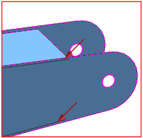
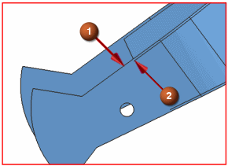
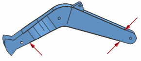

Split edges
To see the part shape more clearly, change the display back to Shaded with Edges.
 Shaded with Edges (Top Border bar→Rendering Style Drop-down list)
Shaded with Edges (Top Border bar→Rendering Style Drop-down list)
Notice that the part has sliver (very thin) faces along the BOOM_RIGHT component.

To remove the sliver faces, begin by splitting edges.
Split Edge (Polygon Geometry group)
-
Type
Project Point on Edge

-


Note
After you select the point, the split is complete. You do not need to click Accept or OK until you finish selecting and splitting edges.

-
Split edges on the other three ends of the sliver faces.

-
OK